```{r setup, include=FALSE}
knitr::opts_chunk$set(echo = TRUE)
```3 Automação de Relatórios
3.1 R Markdown
3.1.1 Markdown e R Markdown
O Markdown é uma linguagem simples de marcação (markup language) que foi influenciada por diversas linguagens, principalmente pelo HTML, e desenvolvida em 2004 por John Gruber e Aaron Swartz.
O Markdown permite que seus elementos sejam definidos usando marcações de texto, sem a necessidade de tags com outras linguagens. Seu arquivo fonte é em formato texto e mesmo com os marcadores de formatação o texto continua legível.
Veja a frase abaixo:
O R pode ser baixado do site do Mirror do CRAN localizado na Universidade Federal do Paraná.
Assim seria essa frase em HTML:
<p>O <b>R</b> pode ser baixado do <i>site</i> do <ahref="https://cran-r.c3sl.ufpr.br/ " & g t; Mirror do CRAN, target="_blank"> localizado na <em>Universidade Federal do Paraná</em>.</p>E em Markdown:
O **R** pode ser baixado do *site* do [Mirror do CRAN](https://cran-r.c3sl.ufpr.br/) localizado na **Universidade Federal do Paraná**.Como vemos no pequeno exemplo acima, o markdown é simples, usa símbolos para fazer formatações como negrito, itálico, links etc… Como você pode deduzir da linha acima, texto entre um * estará em itálico, enquanto texto entre ** estará em negrito.
O markdown é uma ferramenta muito prática para o dia a dia e seu conteúdo pode ser convertido facilmente em diversos formatos: HTML, PDF, EPUB (ebook), e até mesmo MS WORD DOC.
O R Markdown é uma extensão do markdown que adiciona ao R um ambiente integrado para criar documentos dinâmicos que combinam texto, código e resultados, sendo muito útil para a realização de análises, documentação de scripts e geração de relatórios. Tudo isso fica em um único arquivo com extensão .Rmd.
3.1.2 Usando R Markdown no RStudio
Apesar de não ser obrigatório fazer o R Markdown no RStudio, ele nos facilita muito a tarefa de criar, editar e gerar o formato de saída.
Antes de entrarmos nos detalhes, vamos ver como criar um arquivo R Markdown (com extensão .Rmd) com o RStudio!
Com o RStudio aberto, clique na opção File em seguida New File e, por fim, no menu lateral a opção R Markdown.
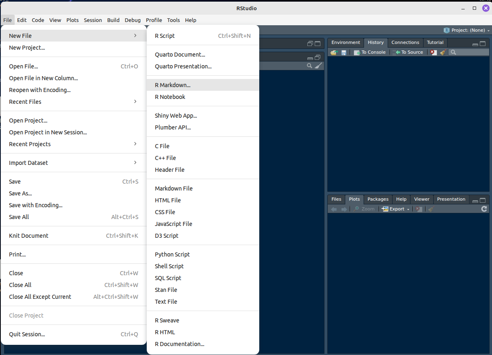
Só para ficar mais claro:
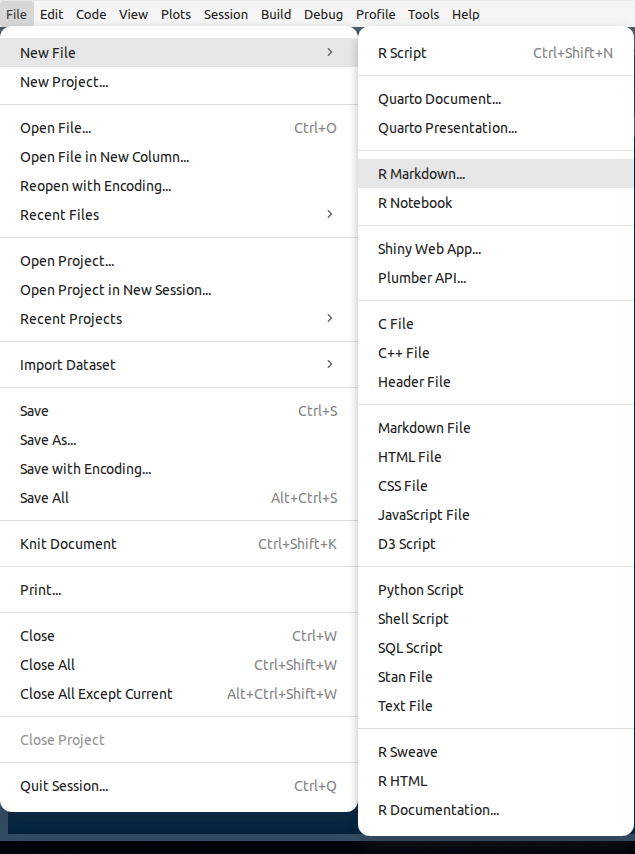
Após selecionar R Markdown, o seguinte menu vai aparecer:
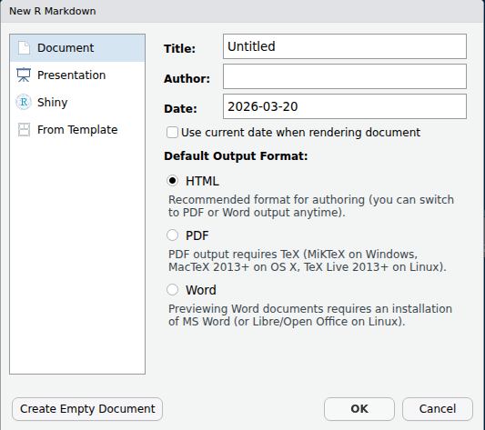
Veja que já podemos inserir o título do documento, autores, data, e escolher o formato de saída, que pode ser HTML, PDF ou Word. O formato HTML costuma ser o mais simples. Para as saídas em PDF e Word, pode ser necessário instalar pacotes adicionais.
Após clicar em OK, o RStudio cria uma aba no editor com um código .Rmd de exemplo:
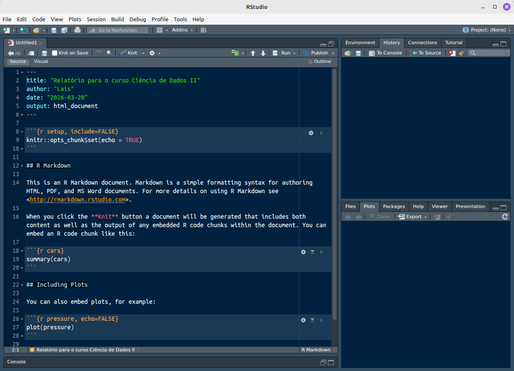
Podemos ver neste exemplo a característica básica do R Markdown: ele mistura texto com blocos de códigos, ou chunks, que são delimitados por três crases (```).
No início do documento contém um cabeçalho, que chamamos cabeçalho YAML. O cabeçalho YAML é uma seção de configuração do documento escrita em YAML, um formato simples de texto usado para escrever configurações de forma organizada e legível. Veja abaixo:
---
title: "Relatório para o curso Ciência de Dados II"
author: "Laís"
date: "2026-03-20"
output: html_document
---Além, do título, autor e data (que pode ser fixa ou automatizada), definimos o tipo de documento que será gerado em output:. Neste caso, html_document, um documento HTML. Outras configurações podem ser inseridas no cabeçalho YAML, veremos algumas mais à frente.
Em seguida, temos um chunk em R, o chunk de setup:
O chunk de setup serve para definir as configurações globais dos chunks do documento, ou seja, as configurações que se aplicam à todos os chunks. Vamos por partes.
Em um chunk, na primeira linha, entre chaves {}, definimos as configurações que se aplicam àquele chunk. No caso acima, {r setup, include=FALSE} está:
- informando que trata-se de um bloco de códigos em
R
- nomeando o bloco de
setup
- configurando para o código e a saída do código não aparecerem no documento renderizado, com
include=FALSE.
Depois, dentro do chunk, knitr::opts_chunk$set(echo = TRUE) está definindo opções globais dos chunks (opts_chunk$set(), do pacote knitr) para que todos os chunks, por padrão, mostrem o código no documento renderizado (echo = TRUE).
Vamos supor que você queira que todas as figuras do meu documento tenham uma largura máxima de 10 polegadas. Você poderia incluir essa configuração aí! Ficaria assim:
```{r setup, include=FALSE}
knitr::opts_chunk$set(
echo = TRUE,
fig.width = 10
)
```Dando continuidade ao código exemplo de .Rmd criado pelo RStudio, temos depois uma seção de texto.
## R Markdown
This is an R Markdown document. Markdown is a simple formatting syntax for authoring HTML, PDF, and MS Word documents. For more details on using R Markdown see <http://rmarkdown.rstudio.com>.
When you click the **Knit** button a document will be generated that includes both content as well as the output of any embedded R code chunks within the document. You can embed an R code chunk like this:Veja que o texto é inserido diretamente no documento, e não dentro de chunks. Vamos ver mais à frente como fazer a formatação de textos no R Markdown.
Até agora vimos o modo source do R Markdown, o modo em que editamos o documento vendo e escrevendo o código. O RStudio também tem um modo visual, onde podemos editar o documento vendo ele formatado. Você pode alternar os modos clicando nos botões Souce e Visual:
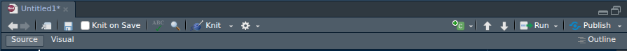
O modo visual se parece com isso:
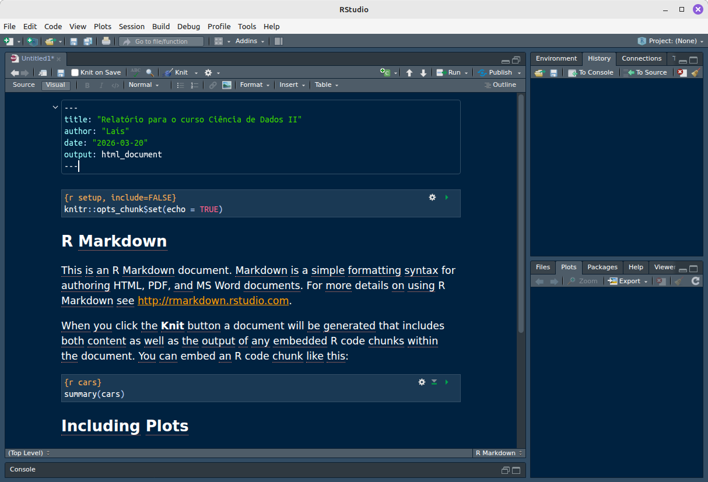
O modo visual pode ser bastante conveniente por permitir escrever como em editor de texto comum, mas ele não é perfeito. Podem ocorrer erros, principalmente de formatação e em arquivos longos, além de o que aparece nem sempre corresponde ao documento final renderizado.
Agora vamos aprender a gerar o documento no formato de saída escolhido, ou seja, a renderizar.
3.1.3 Renderizando um documento R Markdown
Para para renderizar devemos clicar no pequeno botão onde está escrito Knit.
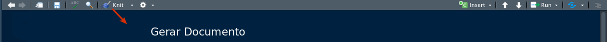
Quando você renderiza o documento, o R Markdown envia o arquivo .Rmd para o knitr, um pacote do R que executa os códigos nos chunks e cria um arquivo intermediário .md. Esse arquivo .md é então processado pelo pandoc, um programa que converte formatos de arquivos. O pandoc vai converter o arquivo intermediário para o formato de saída escolhido (HTML, PDF, ou Word).
Caso ainda não tenha salvo o arquivo .Rmd, ao clicar em Knit o RStudio vai solicitar um nome para salvá-lo. Após dar um nome e salvar, você verá na aba Background Jobs do R o arquivo sendo transformado para o formato HTML e, posteriormente, exibido em uma janela de apresentação do próprio RStudio:
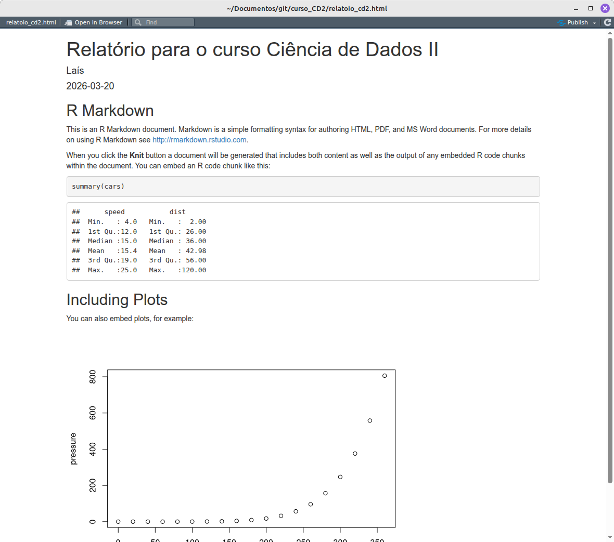
Essa janela de apresentação é um ambiente de visualizar o documento em HTML, mas se quiser clicar no botão Open in Browser, ele será exibido no navegador padrão do seu sistema operacional.
Essa é a renderização básica e em HTML. Podemos inserir outras configurações e formatos modificando o cabeçalho YAML, como veremos a seguir.
3.1.4 Mudando as configurações globais no cabeçalho YAML
Como vimos, o cabeçalho YAML no R Markdown é a parte inicial do documento (delimitada por --- no começo e no fim). É aí que definimos as configurações globais para a renderização do documento.
Quando criamos um R Markdown com o RStudio, o cabeçalho YAML vem com os principais campos:
---
title: "Relatório para o curso Ciência de Dados II"
author: "Laís"
date: "2026-03-20"
output: html_document
---Em date:, poderíamos incluir uma data automática. Por exemplo, com `r Sys.Date()`.
Importante, informamos aí o formato de saída do documento renderizado (output:). Os formatos mais comuns são:
html_documentpdf_documentword_documentbeamer_presentation(slides)
O formato HTML costuma ser o com maior compatibilidade e menos erros e dependência de pacotes adicionais.
Além das configurações básicas, podemos incluir algumas outras opções, como um índice (table of contents - toc), e mudar o tema do documento:
---
title: "Relatório para o curso Ciência de Dados II"
author: "Laís"
date: "`r Sys.Date()`"
output:
html_document:
toc: true
toc_depth: 2
toc_title: "Índice"
theme: cerulean
---Atenção! O cabeçalho YAML é sensível à identação!
Veja que ainda definimos até qual nível de títulos vai entrar no índice (toc_depth = 2, ou seja, até o segundo nível), e um título para o índice (toc_title: "Índice").
Veja como fica o documento renderizado:
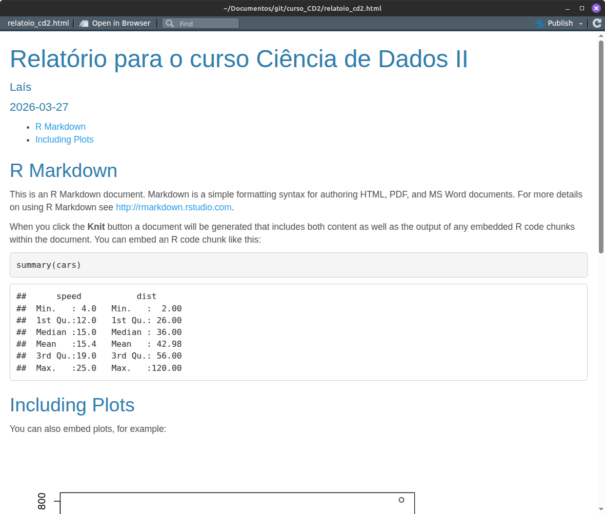
Também existe uma opção legal, principalmente para documentos muito extensos, de colocar o índice lateralizado. Vamos aproveitar e ver outro tema:
---
title: "Relatório para o curso Ciência de Dados II"
author: "Laís"
date: "`r Sys.Date()`"
output:
html_document:
toc: true
toc_float:
collapsed: true
theme: journal
---O documento fica assim:
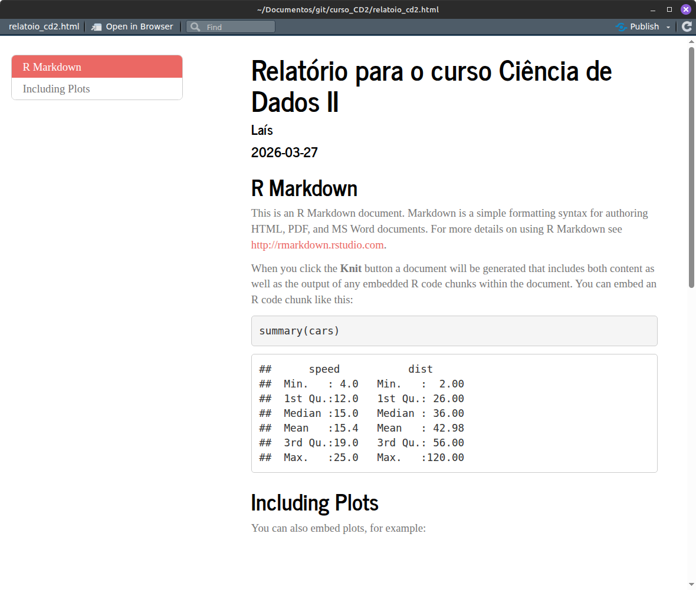
Muitas opções no cabeçalho YAML são específicas para determinado formato de output. Veja um resumo abaixo das configurações do índice:
| Opção | O que faz | Compatibilidade |
|---|---|---|
toc |
Ativa (true) ou desativa (false) o sumário |
HTML, PDF, Word |
toc_depth |
Define até qual nível de títulos entra no TOC | HTML, PDF, Word |
toc_float |
Deixa o TOC fixo na lateral com rolagem | HTML |
toc_title |
Define o título do sumário | HTML |
number_sections |
Numera automaticamente as seções | HTML, PDF, Word |
collapsed |
Inicia o TOC recolhido | HTML (com toc_float) |
smooth_scroll |
Rolagem suave ao clicar nos itens do TOC | HTML |
Os temas usados somente funcionam para o formato HTML. Os principais são:
default→ simples e neutrocerulean→ azul moderno e limpojournal→ estilo acadêmicoflatly→ minimalista com cores suavescosmo→ claro e elegantelumen→ leve e com bom contrastedarkly→ tema escuroreadable→ foco em legibilidadespacelab→ visual mais “tech”united→ tons quentes (laranja/vermelho)yeti→ clean e moderno
Enquanto o HTML usa temas prontos, o PDF depende do LaTeX, então a personalização vem de outras opções. É mais flexível, porém exige mais técnica. Saiba mais AQUI.
Para saber mais sobre o formato de apresentação (slides) com beamer, clique AQUI.
3.1.4.1 Definindo parâmetros para automatização
No R Markdown, params (parâmetros) permitem que você defina valores variáveis no cabeçalho YAML do documento que podem ser usados no corpo do arquivo. Isso é ótimo para criar relatórios automatizados, onde você só precisa mudar o valor do parâmetro para gerar resultados diferentes sem editar o código!
Veja o exemplo abaixo:
---
title: "Situação Epidemiológica de Dengue"
author: "Laís"
output: html_document
params:
ano: 2026
uf: "RJ"
---Criamos dois parâmetros, ano e uf.
Dentro do R Markdown, você utiliza os parâmetros usando params$nome:
## Relatório de vendas
Ano analisado: `r params$ano`
UF analisada: `r params$uf`
# Código que usa os parâmetros
dados_filtrados <- dengue[dengue$ano == params$ano & dengue$uf == params$uf, ]
summary(dados_filtrados)Assim, você pode gerar vários relatórios automaticamente com valores diferentes de parâmetros usando rmarkdown::render() em um script em R separado (e não no .Rmd):
library(rmarkdown)
# Gerar relatório para Rio de Janeiro
rmarkdown::render("relatorio.Rmd",
params = list(ano = 2026, uf = "RJ"),
output_file = paste0("relatorio_", params$ano, "_", params$uf, ".html"))
# Gerar relatório para Piauí
rmarkdown::render("relatorio.Rmd",
params = list(ano = 2026, uf = "PI"),
output_file = paste0("relatorio_", params$ano, "_", params$uf, ".html"))Também é possível gerar vários relatórios de uma vez só:
library(rmarkdown)
# Gerar relatórios para todas as UFs
ufs <- c("AC","AL","AP","AM","BA","CE","DF","ES","GO","MA","MT",
"MS","MG","PA","PB","PR","PE","PI","RJ","RN","RS","RO","RR","SC","SP","SE","TO")
ano <- 2026
for (uf in ufs) {
rmarkdown::render("relatorio.Rmd",
params = list(ano = ano, uf = uf),
output_file = paste0("relatorio_", uf, "_", ano, ".html"))
}Lembrando que estes códigos devem estar em um script .R separado, e não no R Markdown.
Vamos a seguir conhecer um pouco mais da sintaxe do R Markdown.
3.1.5 Formatação de texto no R Markdown
Vamos começar pelos elementos básicos de formatação de texto do R Markdown. Note que pode haver mais de alcançar o mesmo resultado.
Podemos formatar texto em itálido e em negrito usando * ou _:
*italico* **negrito**
_italico_ __negrito__No R Markdown, cada linha de texto é interpretada como parte de um parágrafo, e não como uma quebra automática de linha.
Este texto em
várias linhas vira apenas
um parágrafo no
documento renderizado.Para forçar uma quebra de linha, ponha dois espaços em branco no final da linha.
Linha 1
Linha 2Para inserir uma quebra entre parágrafos, deixe uma linha totalmente em branco.
Parágrafo 1
Parágrafo 23.1.5.1 Títulos
No R usamos # para inserir comentários. Já no R Markdown, o símbolo # é usado para criar títulos (headings) no texto, em diferentes níveis:
# Título nível 1 (maior)
## Título nível 2
### Título nível 3
#### Título nível 4
##### Título nível 5
###### Título nível 6Isso ajuda a organizar o texto, aparece formatado no documento renderizado, e pode gerar automaticamente um índice (table of contents, ou toc).
3.1.5.2 Listas
Para criar listas use * ou -:
* item 1
- item 2
* item 3
- subitem 3.1
- subitem 3.2
- item 4Atenção aos subitens, que devem ter uma tabulação ou espaços (geralmente dois) antes do símbolo * ou -.
Para listas numeradas:
1. um
4. dois
3. tres
+ sub 3a
+ sub 3b
2. quatro Repare que mesmo estando fora de ordem, o R Markdown vai ordenar corretamente os itens no documento renderizado.
3.1.5.3 Linha separadora
Em muitas ocasiões pode ser útil ter uma linha horizontal separando pedaços do texto. Em R Markdown, digite três astericos (***) para se obter:
3.1.5.4 Bloco de citações
No R Markdown você pode criar um bloco de citações usando o símbolo >.
Veja o exemplo abaixo:
> "Windows é um lixo,
> use Linux."
> O. G. Cruz Quando renderizado, o texto aparece destacado:
“Windows é um lixo, use Linux.”
O. G. Cruz
Perceba que valhem as mesmas regras para quebra de linhas. O R Markdown ignorou a quebra entre a primeira e a segunda linha, mas fez a quebra após a segunda. Por que? Destaque o texto com o seu cursor e descubra!
3.1.6 Inserindo links e imagens
3.1.6.1 Links
Criar um link é bem simples, vamos criar um link apontando para o site da Fiocruz:
Acesse o site da [Fiocruz](https://fiocruz.br/).No documento renderizado, somente o texto entre [] vai aparecer, e como um hiperlink para o endereço da URL entre ():
Acesse o site da Fiocruz.
Já no formato abaixo, o endereço da URL será exibido como link:
Acesse o site da Fiocruz em <https://fiocruz.br/>.Acesse o site da Fiocruz em https://fiocruz.br/.
Pode-se combinar o link a vários outros elementos, uma lista por exemplo.
Lista de Sites:
* [ENSP](https://ensp.fiocruz.br/)
* [PROCC](https://fiocruz.br/procc-programa-de-computacao-cientifica)
* [INI](https://www.ini.fiocruz.br/)Precisamos estar atentos ao espaço! Não pode haver espaçamento entre os colchetes e os parênteses. Ou seja, [Nome do hiperlink](URL) e não [Nome do hiperlink] (URL).
Tente incluir um link no nome de Alexandra Elbakyan apontando para https://pt.wikipedia.org/wiki/Alexandra_Elbakyan.
3.1.6.2 Imagens
Incluir imagens no R Markdown é parecido com inserir links. Por exemplo, para incluir o logo do Fiocruz a partir de uma imagem disponível na rede.
A exclamação ! antes dos colchetes serve para indicar que o elemento a ser inserido é uma imagem, e não um link.
O output no documento renderizado se parecerá com isso:

Note que o texto entre colchetes aparece como uma descrição da imagem. Caso não queira incluir uma descrição, basta deixar vazio:
Caso a imagem esteja local, você deve apenas apontar para o caminha do imagem:
Caso a figura esteja no mesmo diretório que seu arquivo .Rmd:
Ou em uma subpasta do mesmo diretório do .Rmd:
Note que o R Markdown vai incluir a imagem no seu tamanho original. É possível alterar o tamanho da seguinte maneira:
{width=30%}Sendo que width=30% significa 30% da largura da página. Veja como fica:

Vários formatos gráficos podem ser usados:
- jpeg, jpg
- png
- tiff
- gif, gif animados
- svg (formato vetorial)
- etc…
Gifs animados são suportados no formato HTML.
3.1.7 Inserindo tabelas
Vamos falar brevemente sobre tabelas básicas em R Markdown. Antes de mais nada, aqui estamos falando de tabelas implementadas em markdown e não as tabelas geradas por um comando no R.
Veja o código abaixo:
| Nome | Sexo | Idade | Grupo |
| :---- | :--: | ----: | ----- |
| João | M | 34 | A |
| Maria | F | 29 | A |
| Ana | F | 32 | B |Ele vai gerar a seguinte tabela:
| Nome | Sexo | Idade | Grupo |
|---|---|---|---|
| João | M | 34 | A |
| Maria | F | 29 | A |
| Ana | F | 32 | B |
Repare o alinhamento das colunas. Ele foi definido na segunda linha da tabela, com os símbolos : (que indicam o lado do alinhamento) e ---:
:---→ Alinhamento à esquerda:---:→ Alinhamento centralizado---:→ Alinhamento à direita---→ Alinhamento à esquerda, padrão.
Os elementos de uma tabela podem ser formatados em negrito, itálico, e podem ser inseridos links e imagens também.
| Eu antes do café | Eu depois do café |
|---|---|
Esse seria o código para reproduzir essa tabela. No entanto lembre-se que vai precisar das imagens e de configurar o caminho para refletir a localização das imagens na sua máquina.
| Eu *antes* do café | Eu *depois* do café |
| :---------------------: | :--------------------: |
|  |  |Outro fato a ser notado é que não há a necessidade de estar das colunas estarem alinhadas, já que o que importa é o separados |. O alinhamento serve mais para facilitar a visualização no documento .Rmd. Porém, o código abaixo daria o mesmo resultado:
| Eu *antes* do café | Eu *depois* do café |
| :---: | :---: |
|  |  |
O modo visual do RStudio permite inserir e formatar tabelas de forma bastante simples. Basta clicar em Table e depois em Insert Table…:
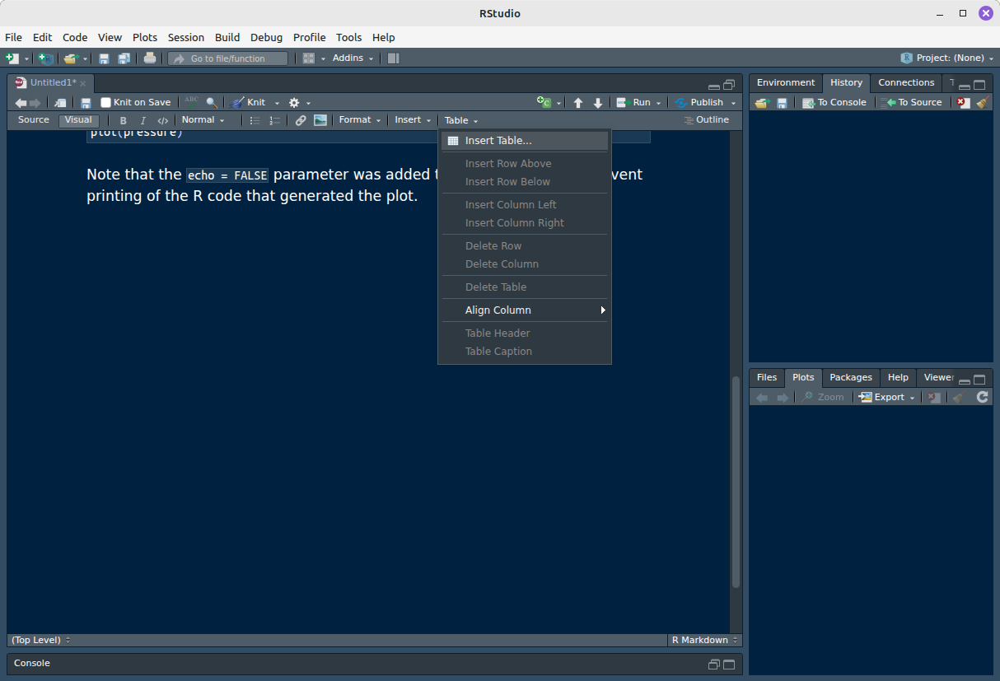
Depois, coloque o número de linhas e colunas, e, se desejar, um título para a tabela:
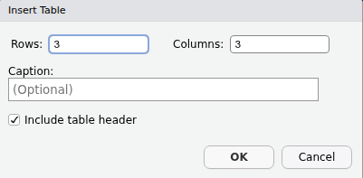
Após clicar em OK, a tabela aparecerá no modo visual:
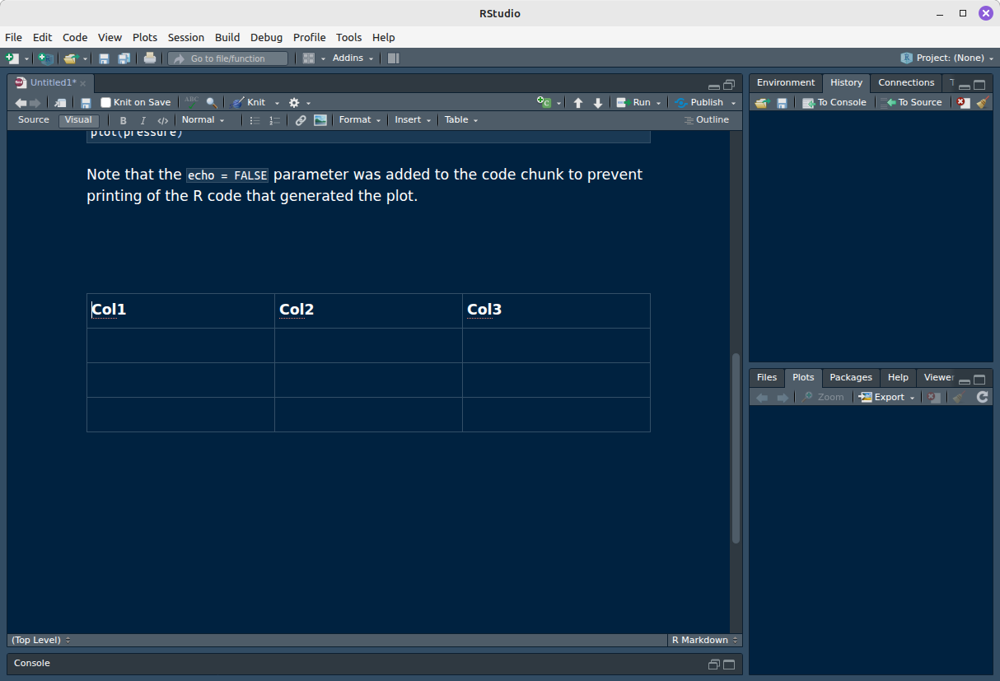
Se alternamos para o modo source novamente, a tabela aparecerá formatada em markdown:
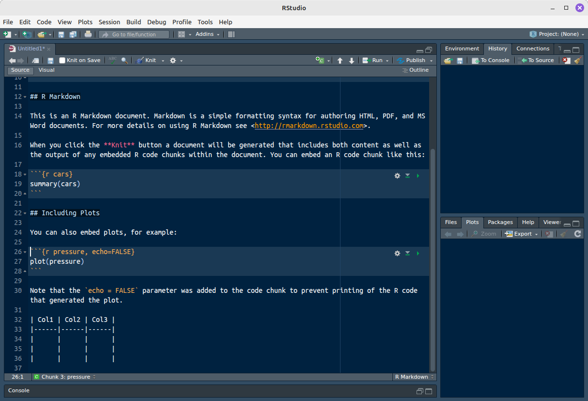
(Detalhe: Percebeu que, apesar de que pulamos algumas linhas antes da tabela no modo visual, quando alternamos para o modo source, elas desapareceram? Esse é um exemplo da “falta de controle” que temos com o modo visual. Ele acaba tomando algumas decisões para você que podem não ser o desejado.)
Existem também algumas ferramentas on-line que ajudam a criar as tabelas em markdown, como o Tables Generator. Mas há muitas outras!
3.1.8 Inserindo equações
Inserir equações no R Markdown é direto e poderoso porque ele usa LaTeX, o padrão universal para equações matemáticas. As equações ficam precisas e com qualidade profissional.
Existem basicamente duas maneiras de se escrever uma equação no R Markdown, no formato chamado inline e na forma de blocos.
Veja o exemplo abaixo, no formato inline:
Podemos escrever que \(\frac{2}{3}\) dos Brasileiros tem sobrepeso ou obesidade. Ou ainda que o parâmetro do modelo estimado foi \(\hat{\lambda}=1.02\), e ainda algo como \(\sqrt{4}=2\), as letras gregas \(\alpha, \beta, \gamma...\), símbolos especiais como \(\pm\), operadores matemáticos e lógicos como \(x \ge 15\) ou ainda \(a_i \ge 0~~~\forall i\)… E por aí vai.
Este é o código fonte do parágrafo acima:
Podemos escrever que $\frac{2}{3}$ dos Brasileiros tem sobrepeso ou obesidade. Ou ainda que o parâmetro do modelo estimado foi $\hat{\lambda}=1.02$, e ainda algo como $\sqrt{4}=2$, as letras gregas $\alpha, \beta, \gamma...$, símbolos especiais como $\pm$, operadores matemáticos e lógicos como $x \ge 15$ ou ainda $a_i \ge 0~~~\forall i$... E por aí vai.O modo inline permite misturar fórmulas, letras gregas, símbolos junto ao texto. Para isso, usamos o $ para abrir e fechar o trecho com o formato matemático.
Já no modo bloco devemos escrever uma ou mais equações dentro de um bloco iniciado e fechado por $$. Por exemplo:
A equação de segundo grau é dada por:
$$
x=\frac{-b \pm \sqrt{bˆ2-4ac}}{2a}
$$No documento renderizado, o código acima aparece assim:
A equação de segundo grau é dada por: \[ x=\frac{-b \pm \sqrt{bˆ2-4ac}}{2a} \]
Abaixo temos exemplos de equações para usar no R Markdown:
| Descrição | Código | Resultado |
|---|---|---|
| Equação simples | $y = ax^2 \times bx + c$ |
\(y = ax^2 \times bx + c\) |
| Fração | $\frac{a}{b}$ |
\(\frac{a}{b}\) |
| Expoente | $x^2$ |
\(x^2\) |
| Raiz | $\sqrt{x}$ |
\(\sqrt{x}\) |
| Logaritmo | $\log(x)$ |
\(\log(x)\) |
| Subscrito | $x_1$ |
\(x_1\) |
| Letra grega | $\alpha + \beta$ |
\(\alpha + \beta\) |
| Somatório | $\sum_{i=1}^{n} x_i$ |
\(\sum_{i=1}^{n} x_i\) |
| Integral | $\int_a^b f(x)\,dx$ |
\(\int_a^b f(x)\,dx\) |
| Limite | $\lim_{x \to 0} f(x)$ |
\(\lim_{x \to 0} f(x)\) |
| Derivada | $\frac{d}{dx}f(x)$ |
\(\frac{d}{dx}f(x)\) |
| Matriz | $\begin{bmatrix} a & b \\ c & d \end{bmatrix}$ |
\(\begin{bmatrix} a & b \\ c & d \end{bmatrix}\) |
| Distribuição Normal | $Y \sim \mathcal{N}(\mu, \sigma^2)$ |
\(Y \sim \mathcal{N}(\mu, \sigma^2)\) |
| Distribuição Poisson | $Y \sim \text{Poisson}(\lambda)$ |
\(Y \sim \text{Poisson}(\lambda)\) |
3.1.9 Executando comandos em R no R Markdown
Vamos, agora, ver como integrar comandos em R no R Markdown. Estes podem ser feitos no modo inline e no modo de blocos (chunks) de código R.
3.1.9.1 R no modo inline
No modo inline escrever o comando aninhado ao texto. Exemplo:
104 graus Fahrenheit são `r (104 - 32)*5 /9` graus Celsius.
Vai ser renderizado como:
104 graus Fahrenheit são 40 graus Celsius.
Repare que a crase “`” é usada para criar o código inline. O r minúsculo após a primeira crase indica tratar-se de um código em R.
Você consegue pensar na utilidade de usar códigos R inline no R Markdown?
Pense em todas as vezes que você teve que corrigir números e estimativas em um texto depois de ter atualizado os dados ou as análises. Usando R inline no R Markdown você consegue fazer a automação de resultados, reforça a reprodutibilidade (se os dados mudam, o valor no texto atualiza) e minimiza erros humanos (ao evitar ter que digitar e atualizar manualmente números).
Por exemplo, vamos voltar aos dados de mortalidade de mulheres de 15 a 49 anos no Brasil em 2024.
library(tidyverse)
dadosUF <- read_csv('https://raw.githubusercontent.com/laispfreitas/curso_CD1/refs/heads/main/SIM_MIF_2024_UF_catCID.csv')Podemos escrever:
“Em 2024, morreram 69548 mulheres de 15 a 49 anos no Brasil. Isto representa uma mortalidade de 123.79 óbitos por 100 mil mulheres nesta faixa etária. A maior mortalidade específica por categoria do CID-19 foi observada em Roraima, correspondente a 12.32 óbitos por”Neoplasia maligna do colo do útero” por 100 mil.”
Veja como fazer isso de forma automatizada:
“Em 2024, morreram `r format(sum(dadosUF$n), scientific = FALSE)` mulheres de 15 a 49 anos no Brasil. Isto representa uma mortalidade de `r round(sum(dadosUF$n)/sum(unique(dadosUF$Pop)) * 100000,2)` óbitos por 100 mil mulheres nesta faixa etária. A maior mortalidade específica por categoria do CID-19 foi observada em `r dadosUF$UF[which.max(dadosUF$mortalidade)]`, correspondente a `r round(max(dadosUF$mortalidade) * 100,2)` óbitos por”`r dadosUF$DESC_CAT[which.max(dadosUF$mortalidade)]`” por 100 mil.”
O uso do comando R inline deve ser restrito a pequenos cálculos e formatação de strings, pois essa maneira não permite comandos mais complexos e nem gráficos.
3.1.9.2 Blocos de códigos em R
Os chunks em R no R Markdown são usados para fazer o processamento em R, produzir resultados, gráficos, para ilustrar o código quando se prepara uma aula, deixar o código visível em um relatório, entre outros.
Veja o exemplo abaixo. Como vimos antes, um bloco de códigos é delimitado no início e no fim por três crases. O {r} no início do bloco informa que aquele bloco contém código em R.
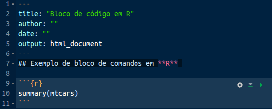
Ao renderizar o documento acima, teremos em nossa janela de saída o seguinte:
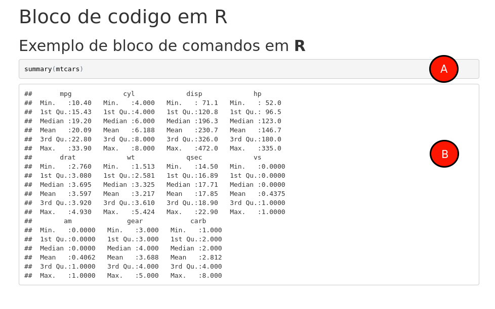
Note que temos duas regiões,
- com um fundo cinza claro, onde existe o eco do comando em
Rcontido no bloco,
- com um fundo cinza claro, onde existe o eco do comando em
- a saída (output) da função
summary()que estava no bloco, precedida por##em cada linha.
- a saída (output) da função
E se quisermos incluir mais um bloco? Poderíamos digitar todos os comandos para criar o bloco, no entanto, o RStudio oferece um atalho para isso.
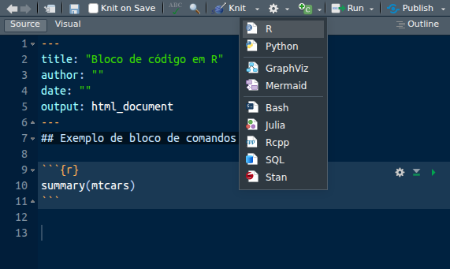
Perceba que é possível incluir chunks de diversas linguagens, não apenas R. Após clicar para inserir um chunk em R, ele vai aparecer no R Markdown vazio.
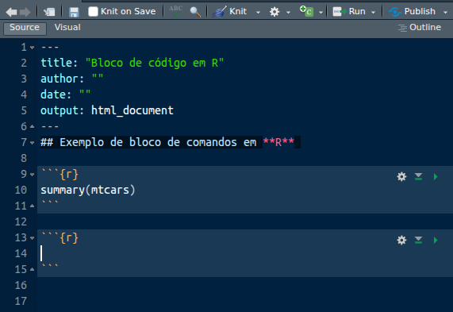
Perceba que cada chunk tem três botões à esquerda. O primeiro abre as configurações do chunk. O segundo roda todos os chunks anteriores. O terceiro roda aquele chunk. Vamos clicar no botão de configurações:
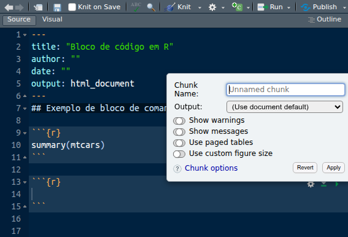
Aí aparecem algumas configurações bem úteis! Podemos incluir um nome para o chunk, o que facilita bastante a organização do documento. O nome é opcional, mas não pode ser repetido. Vemos algumas opções para “ligar/desligar”, e opções para controlar o output:
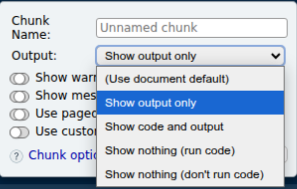
Veja o que acontece quando incluímos algumas configurações:
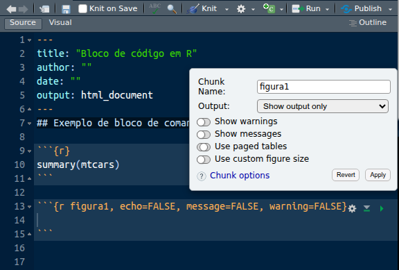
Perceba que as configurações apareceram na primeira linha do chunk: {r figura1, echo=FALSE, message=FALSE, warming=FALSE}.
Abaixo, um resumo das configurações de chunks no RStudio, o que cada faz, e como aparece no chunk:
| Opção no RStudio | Resultado no documento renderizado | Equivalente no chunk |
|---|---|---|
| Show output only | Mostra apenas o resultado (esconde código) | echo = FALSE |
| Show code and output | Mostra código e resultado | echo = TRUE |
| Show nothing (run code) | Executa, mas não mostra nada | include = FALSE |
| Show nothing (don’t run code) | Não executa e não mostra nada | eval = FALSE |
| Show Warnings | Mostra avisos | warning = TRUE |
| Hide Warnings | Esconde avisos | warning = FALSE |
| Show Messages | Mostra mensagens | message = TRUE |
| Hide Messages | Esconde mensagens | message = FALSE |
| Use paged tables | Mostra tabelas grandes com paginação (HTML interativo) | df_print = "paged" |
| Use custom figure size | Permite definir tamanho do gráfico manualmente | fig.width =, fig.height = |
Essas são as mais usadas, mas existem outras opções! Para saber mais veja a documentação do pacote knitr na sessão Code Evaluation.
3.1.9.3 Incluindo imagens com R
Vimos anteriormente como colocar uma imagem de um arquivo local ou da internet direto no R Markdown. Porém, existe também uma forma de fazê-lo em blocos de códigos em R usando a função include_graphics() do pacote knitr:
```{r echo = FALSE}
knitr::include_graphics("https://www.r-project.org/logo/Rlogo.png")
```No documento renderizado, aparecerá assim:

(Repare que o código não apareceu, pois utilizamos echo = FALSE.)
Usar include_graphics() tem algumas vantagens, incluindo permitir numeração automática, no formato PDF ou quando configurada, e permitir programação, o que é muito útil para automação de relatórios:
```{r}
knitr::include_graphics(paste0("fig_", i, ".png"))
```Além disso, tem a vantagem de poder controlar a figura com as opções do chunk. Na subseção anterior vimos que podemos controlar a largura (fig.width) e altura (fig.height) dos outputs de um bloco de códigos (chunk). Exitem também outras opções com aplicação para imagens, veja abaixo:
| Opção | Valor padrão | Descrição |
|---|---|---|
fig.width |
7 | Largura do gráfico (em polegadas) |
fig.height |
5 | Altura do gráfico (em polegadas) |
fig.retina |
2 | Multiplicador de resolução para telas (HTML) |
out.width |
NULL |
Largura exibida no documento (ex: "50%", "400px") |
out.height |
NULL |
Altura exibida no documento |
dpi |
72 (HTML) / 300 (PDF) | Resolução da imagem (pontos por polegada) |
fig.align |
"default" (left) |
Alinhamento da figura (left, center, right) |
fig.cap |
NULL |
Título da figura |
fig.asp |
NULL |
Proporção altura/largura (aspect ratio) |
fig.pos |
NULL |
Posicionamento em LaTeX (ex: "H", "ht") |
dev |
"png" (HTML) |
Tipo de arquivo da imagem (png, pdf, jpeg) |
Vamos então diminuir o tamanho da figura:
```{r echo = FALSE, out.width="30%"}
knitr::include_graphics("https://www.r-project.org/logo/Rlogo.png")
```Renderizado:

Também podemos gerar figuras com R diretamente no R Markdown, ou seja, sem precisar salvar e incluir o arquivo salvo. Veja o código abaixo, gerando gráficos no modo base e com ggplot2.
No **modo base**:
```{r}
plot(cars$speed,cars$dist)
```
Usando `ggplot2`:
```{r}
library(ggplot2) #poderia estar em no bloco separado apenas com pacotes, no início, por exemplo
ggplot(cars, aes(speed, dist)) +
geom_point()
```Renderizado, esse código vai aparecer assim:
No modo base:
plot(cars$speed,cars$dist)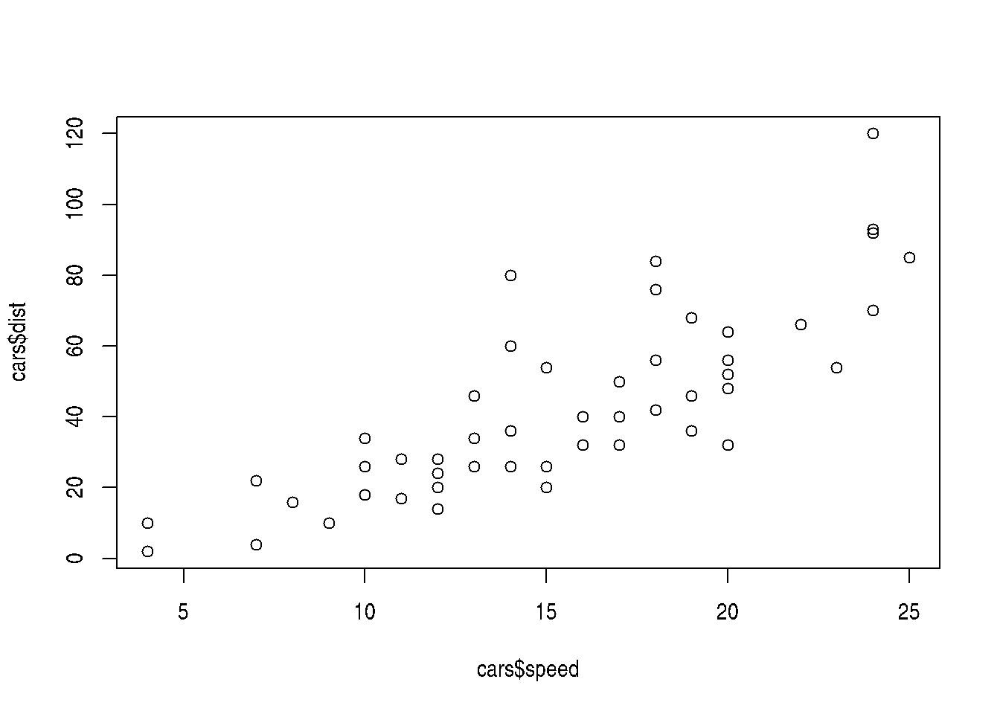
Usando ggplot2:
library(ggplot2) #poderia estar em no bloco separado apenas com pacotes, no início, por exemplo
ggplot(cars, aes(speed, dist)) +
geom_point()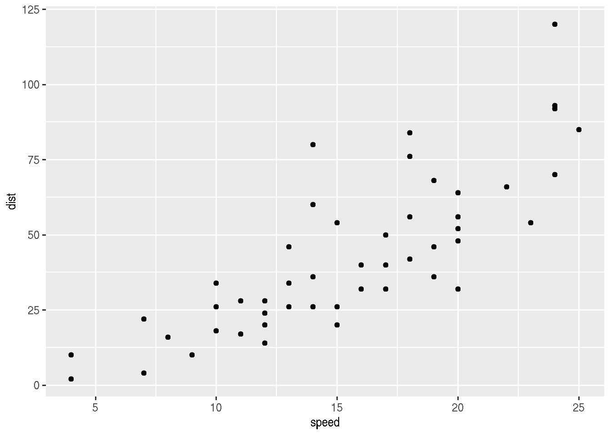
Vamos especificar a altura e a largura, e colocar um título da figura:
```{r fig.width=2.5, fig.height=2, fig.cap="Um gráfico muito pequeno."}
ggplot(cars, aes(speed, dist)) +
geom_point()
```Renderizado:
ggplot(cars, aes(speed, dist)) +
geom_point()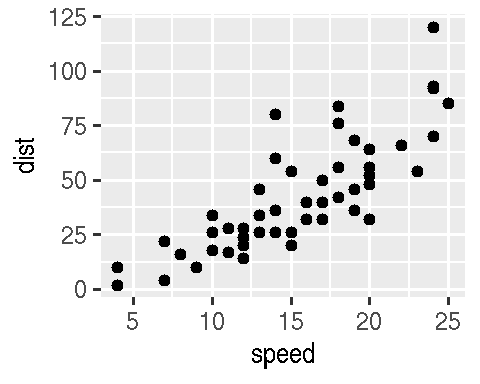
3.1.9.4 Tabelas com R
Para melhorar o aspecto na apresentação de tabelas, existem varios pacotes que nos ajudar. Vamos ver três deles.
O primeiro é o pacote knitr, que já deve estar instalado pois junto ao rmarkdown é um dos principais pacotes para a implementação do R Markdown. A função para tabelas é a kable().
```{r echo = FALSE}
knitr::kable(mtcars[1:5, ],
caption = "Tabela usando kable",
digits = 2,
col.names = c("Modelo", colnames(mtcars)))
```| Modelo | mpg | cyl | disp | hp | drat | wt | qsec | vs | am | gear | carb |
|---|---|---|---|---|---|---|---|---|---|---|---|
| Mazda RX4 | 21.0 | 6 | 160 | 110 | 3.90 | 2.62 | 16.46 | 0 | 1 | 4 | 4 |
| Mazda RX4 Wag | 21.0 | 6 | 160 | 110 | 3.90 | 2.88 | 17.02 | 0 | 1 | 4 | 4 |
| Datsun 710 | 22.8 | 4 | 108 | 93 | 3.85 | 2.32 | 18.61 | 1 | 1 | 4 | 1 |
| Hornet 4 Drive | 21.4 | 6 | 258 | 110 | 3.08 | 3.21 | 19.44 | 1 | 0 | 3 | 1 |
| Hornet Sportabout | 18.7 | 8 | 360 | 175 | 3.15 | 3.44 | 17.02 | 0 | 0 | 3 | 2 |
A kable() permite alguma estilização, como colocar um título para a tabela (caption =), definir o número de dígitos dos numerais (digits =) e os nomes das colunas (col.names =). Para saber mais, veja o help da função digitando no console do R:
?kableExiste um pacote que expande a estilização das tabelas criadas com knitr::kable(), ele se chama pacote kableExtra. Veja o exemplo abaixo. Se necessário, instale o pacote primeiro:
install.packages("kableExtra")```{r echo = FALSE, message = FALSE, warning = FALSE}
library(knitr)
library(kableExtra)
kable(mtcars[1:5, ],
caption = "Tabela formatada com kableExtra",
digits = 2,
col.names = c("Modelo", colnames(mtcars))) |>
kable_styling(
position = "center",
bootstrap_options = c("hover", "bordered")
) |>
row_spec(0, font_size = 16) |>
column_spec(1, bold = TRUE) |>
add_header_above(c(" " = 1, "Características" = ncol(mtcars)))
```Perceba que é compatível usar a kableExtra com o pipe nativo (|>), o que facilita a legibilidade do código e vai criando uma sequência de edições da tabela.
Primeiro, a tabela é criada com kable(). Depois, kable_styling() é usada para centralizar a tabela, e estilizar o visual (com bootstrap_options =):
- hover → destaque ao passar o mouse (HTML)
- bordered → adiciona bordas em todas as células
Depois, row_spec() é usada para tornar o texto do cabeçalho (linha 0) maior, e column_spec() está sendo usada para tornar o texto da primeira coluna negrito. Por fim, colocamos uma linha de títulos acima do cabeçalho, agrupando colunas.
Vamos ver o resultado final dessa tabela renderizada:
| Modelo | mpg | cyl | disp | hp | drat | wt | qsec | vs | am | gear | carb |
|---|---|---|---|---|---|---|---|---|---|---|---|
| Mazda RX4 | 21.0 | 6 | 160 | 110 | 3.90 | 2.62 | 16.46 | 0 | 1 | 4 | 4 |
| Mazda RX4 Wag | 21.0 | 6 | 160 | 110 | 3.90 | 2.88 | 17.02 | 0 | 1 | 4 | 4 |
| Datsun 710 | 22.8 | 4 | 108 | 93 | 3.85 | 2.32 | 18.61 | 1 | 1 | 4 | 1 |
| Hornet 4 Drive | 21.4 | 6 | 258 | 110 | 3.08 | 3.21 | 19.44 | 1 | 0 | 3 | 1 |
| Hornet Sportabout | 18.7 | 8 | 360 | 175 | 3.15 | 3.44 | 17.02 | 0 | 0 | 3 | 2 |
Nem todas as estilizações vão funcionar em todos os formatos. Geralmente, todas funcionam em HTML, a maioria em PDF, e em Word… Bom. Aí complica.
Um outro pacote que permite formatar tabelas e até mesmo as saídas de modelos é o pander. Caso esse pacote não esteja instalado é necessário instalar ou pelo menu do R Studio ou:
install.packages("pander")Em seguida, teste o comando:
```{r echo = FALSE, results = 'asis'}
library(pander)
pandoc.table(mtcars[1:5, ],
style = "rmarkdown",
caption = "Tabela usando Pander")
```O pander gera uma tabela em formato de markdown. Para que ela possa ser renderizada, precisamos incluir result = 'asis' nas opções do chunk.
| mpg | cyl | disp | hp | drat | wt | qsec | |
|---|---|---|---|---|---|---|---|
| Mazda RX4 | 21 | 6 | 160 | 110 | 3.9 | 2.62 | 16.46 |
| Mazda RX4 Wag | 21 | 6 | 160 | 110 | 3.9 | 2.875 | 17.02 |
| Datsun 710 | 22.8 | 4 | 108 | 93 | 3.85 | 2.32 | 18.61 |
| Hornet 4 Drive | 21.4 | 6 | 258 | 110 | 3.08 | 3.215 | 19.44 |
| Hornet Sportabout | 18.7 | 8 | 360 | 175 | 3.15 | 3.44 | 17.02 |
| vs | am | gear | carb | |
|---|---|---|---|---|
| Mazda RX4 | 0 | 1 | 4 | 4 |
| Mazda RX4 Wag | 0 | 1 | 4 | 4 |
| Datsun 710 | 1 | 1 | 4 | 1 |
| Hornet 4 Drive | 1 | 0 | 3 | 1 |
| Hornet Sportabout | 0 | 0 | 3 | 2 |
Sem result = 'asis', a tabela ficará assim:
| | mpg | cyl | disp | hp | drat | wt | qsec |
|:---------------------:|:----:|:---:|:----:|:---:|:----:|:-----:|:-----:|
| **Mazda RX4** | 21 | 6 | 160 | 110 | 3.9 | 2.62 | 16.46 |
| **Mazda RX4 Wag** | 21 | 6 | 160 | 110 | 3.9 | 2.875 | 17.02 |
| **Datsun 710** | 22.8 | 4 | 108 | 93 | 3.85 | 2.32 | 18.61 |
| **Hornet 4 Drive** | 21.4 | 6 | 258 | 110 | 3.08 | 3.215 | 19.44 |
| **Hornet Sportabout** | 18.7 | 8 | 360 | 175 | 3.15 | 3.44 | 17.02 |
Table: Tabela usando Pander (continued below)
| | vs | am | gear | carb |
|:---------------------:|:--:|:--:|:----:|:----:|
| **Mazda RX4** | 0 | 1 | 4 | 4 |
| **Mazda RX4 Wag** | 0 | 1 | 4 | 4 |
| **Datsun 710** | 1 | 1 | 4 | 1 |
| **Hornet 4 Drive** | 1 | 0 | 3 | 1 |
| **Hornet Sportabout** | 0 | 0 | 3 | 2 |
O pander também pode ser usado para formatar resultados de modelos:
```{r echo = FALSE, results = 'asis'}
library(pander)
modelo <- glm(low ~ ., family = binomial, data = MASS::birthwt)
pander(modelo)
```Warning: glm.fit: algoritmo não convergiuWarning: glm.fit: probabilidades ajustadas numericamente 0 ou 1 ocorreu| Estimate | Std. Error | z value | Pr(>|z|) | |
|---|---|---|---|---|
| (Intercept) | 1161 | 207421 | 0.0056 | 0.9955 |
| age | 0.3223 | 1787 | 0.0001804 | 0.9999 |
| lwt | -0.1733 | 320.2 | -0.0005413 | 0.9996 |
| race | 0.6494 | 31652 | 2.052e-05 | 1 |
| smoke | -17.46 | 76680 | -0.0002277 | 0.9998 |
| ptl | 126.7 | 340550 | 0.0003721 | 0.9997 |
| ht | 36.36 | 123685 | 0.000294 | 0.9998 |
| ui | -61.83 | 75468 | -0.0008193 | 0.9993 |
| ftv | -8.925 | 16243 | -0.0005495 | 0.9996 |
| bwt | -0.4466 | 64.68 | -0.006904 | 0.9945 |
Repare que saiu uma mensagem de aviso do modelo. Como poderíamos fazer para que isso não ocorra?
Por fim, essas são algumas opções para fazer tabelas com Rno R Markdown. Exitem muitas outras! Veja abaixo um pequeno resumo sobre algumas principais utilizadas:
| Pacote | Descrição | Principais vantagens | Limitações | Melhor uso | Compatibilidade |
|---|---|---|---|---|---|
knitr |
Função kable()básica para criar tabelas simples |
Simples, leve, já costuma vir instalado, funciona em vários formatos | Pouca customização, visual básico | Tabelas simples e rápidas | HTML, PDF, Word |
pander |
Formata automaticamente objetos em tabelas Markdown | Muito automático, pouco código necessário | Pouco controle, menos usado atualmente | Exploração rápida / relatórios simples | HTML, PDF |
kableExtra |
Extensão para a kable() com mais estilo |
Boa customização, mantém compatibilidade com LaTeX e HTML | Sintaxe mais longa, depende do kable() |
Relatórios acadêmicos e PDFs | HTML, PDF |
gt |
Pacote moderno para tabelas bem formatadas | Visual avançado, fácil de estilizar, código limpo | Suporte limitado a PDF/Word | Relatórios HTML e dashboards | HTML (principal) |
flextable |
Tabelas altamente customizáveis para documentos Office | Excelente integração com Word e PowerPoint | Menos foco em PDF, sintaxe mais extensa | Relatórios em Word | Word, HTML |
reactable |
Tabelas interativas baseadas em JavaScript | Interatividade (filtro, busca, ordenação) | Só funciona em HTML | Dashboards e relatórios interativos | HTML |
3.1.10 Considerações finais sobre R Markdown
Cobrimos um pouco além do básico do R Markdown. Existem muitos recursos e extensões que podem ser utilizados. Recomendamos os seguintes livros, dos principais desenvolvedores do R Markdown para quem quiser se aprofundar:
Como vimos, um dos pontos importantes é que muitas vezes você precisa de antemão saber que tipo de documento quer produzir (HTML, PDF, etc), pois alguns comandos podem ser específicos para cada formato.
Além disso, é possível injetar comandos HTML caso seja este o formato de output, ou ainda comandos em LaTeX caso seja PDF.
Existe um pacote chamado bookdown que permite editar livros, que podem ser hospedados na nuvem. Existem muitos livros disponíveis nesse formato, inclusive alguns já indicados sobre Data Science. Explore a lista de livros em (https://bookdown.org/).
3.2 Quarto
Vamos ver agora um pouco sobre o Quarto, uma ferramenta desenvolvida como uma evolução do R Markdown que oferece suporte mais amplo e nativo a múltiplas linguagens de programação e maior controle sobre formatação, publicação e organização de projetos grandes, como livros, sites ou relatórios interativos.
3.2.1 Quarto no RStudio
Para criar um documento usando Quarto no RStudio, clique em File, New File, Quarto Document.
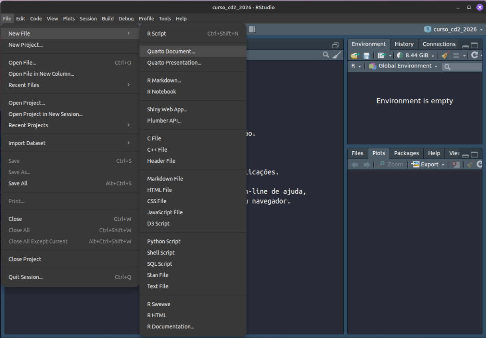
Será aberta a seguinte janela:
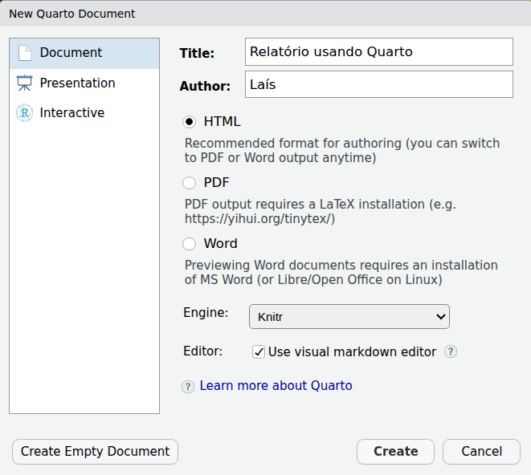
Bem parecido com R Markdown, não é mesmo? As similaridades não param por aí.
Após clicar em Create, um documento de formato .qmd aparecerá no RStudio:
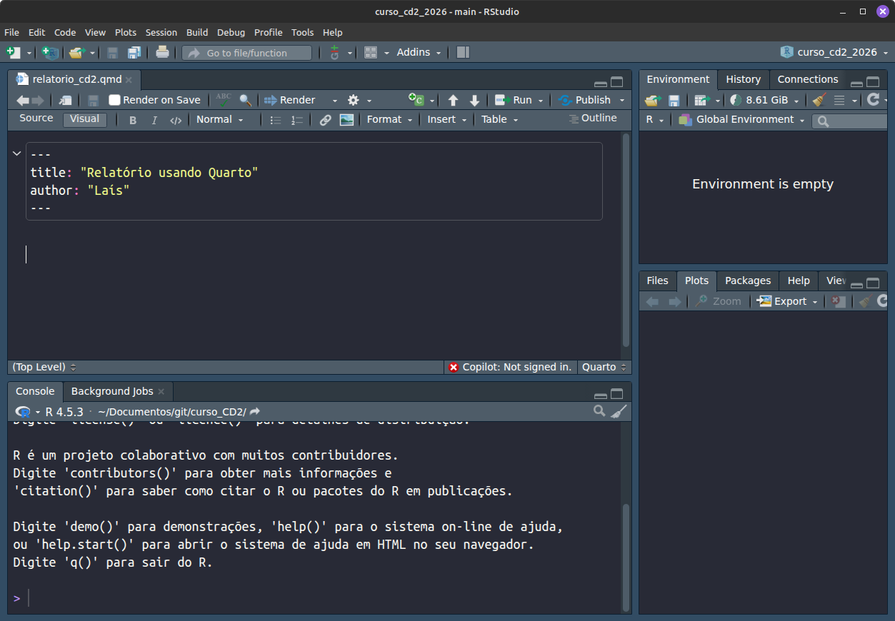
Por padrão, o documento abre no modo visual. Sim, também temos o modo visual e o modo source para Quarto. Porém, o RStudio não nos fornece um exemplo de código, como para R Markdown. Vamos substituir o conteúdo do documento pelo abaixo:
---
title: "Relatório usando Quarto"
author: "Laís"
date: "`r Sys.Date()`"
format:
html:
toc: true
toc-depth: 2
toc-title: "Índice"
theme: cerulean
---
```{r}
#| label: setup
#| include: false
knitr::opts_chunk$set(echo = FALSE)
```
## Quarto
Esse é um documento Quarto. Quando você clica no botão **Render**, este arquivo será renderizado e um documento será gerado incluindo o texto e códigos e *outputs* de *chunks*. Blocos de códigos (*cunks*) podem ser inseridos assim:
```{r}
#| label: cars
summary(cars)
```
## Incluindo plots
Você também pode incluir plots:
```{r}
#| label: pressure
#| echo: false
plot(pressure)
```
Repare que `#| echo: FALSE` foi adicionado como configuração do *chunk* para que o código não seja incluído no documento renderizado, apenas o plot.
Também podemos incluir [links](https://quarto.org/) e figuras:
Reparou as diferenças? A maioria do que aprendemos para R Markdown se aplica para Quarto!
Diferenças:
- No cabeçalho YAML, se usou
format:
htmlem vez de
output:
html_document- As configurações do chunk aparecem dentro do chunk, precedidas de
#|. Ou seja:
```{r}
#| label: pressure
#| echo: false
plot(pressure)
```em vez de
```{r pressure, echo = FALSE}
plot(pressure)
```Porém o Quarto é esperto! Se você colocar as configurações do chunk da forma do R Markdown, ele vai entender!
Bom, agora vamos renderizar. No R Markdown usamos o botão Knit para isso. No Quarto, este botão é substituído pelo botão Render, que tem a mesma função:
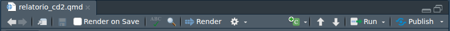
Após clicar em Render, você pode acompanhar o documento sendo processado na aba Background Jobs do RStudio, e logo se abre no navegador o documento renderizado:
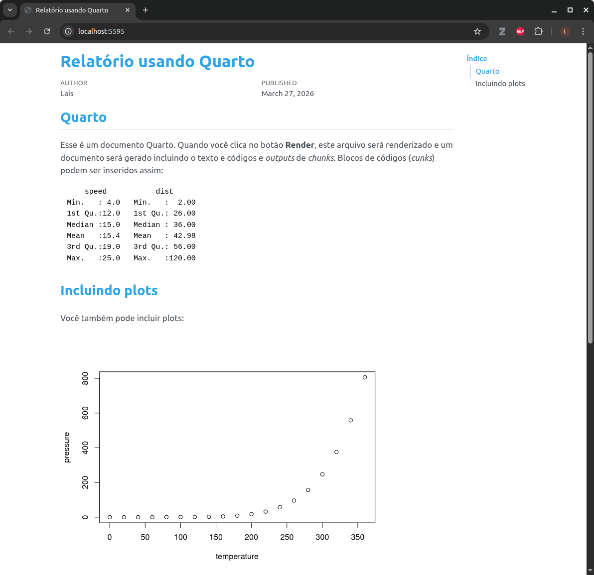
Para saber mais sobre o Quarto, consulte sua documentação AQUI.
3.3 Quarto VS R Markdown
Veja abaixo um resumo comparativo de R Markdown e Quarto:
| Aspecto | R Markdown | Quarto |
|---|---|---|
| Foco / Linguagens | Principalmente R, mas suporta outras linguagens com configuração |
Nativamente R, Python, Julia e Jupyter, sem configuração extra |
| Renderização | Usa knitr para R e Pandoc para saída final |
Usa Pandoc, knitr para R, e engines nativas para outras linguagens |
| Sintaxe YAML | output: html_document e variantes |
format: html (mais uniforme e flexível) |
| Flexibilidade | Bom para relatórios simples e rápidos | Melhor para projetos complexos, sites, livros, dashboards |
| Publicação / Projetos | Limitado, focado em documentos únicos | Suporte nativo a sites, livros e múltiplos formatos |
| Curva de aprendizado | Baixa, fácil começar | Um pouco maior, precisa aprender novas convenções |
| Comunidade / Material | Muito material, tutoriais e pacotes R |
Crescente, mas menor que R Markdown ainda |
| Vantagem principal | Simplicidade e rapidez em análises R |
Flexibilidade, múltiplas linguagens e controle avançado |
| Desvantagem principal | Limitado a R e configurações manuais para outras linguagens |
Curva de aprendizado um pouco maior, menos material antigo |
Referências
Prática
- Crie no RStudio um novo documento do tipo R Markdown. Apague totalmente o conteúdo e cole o conteúdo abaixo. Em seguida crie o arquivo de saída (neste caso html) clicando no botão Knit.
---
title: “Exemplo de formatos em RMarkdown”
author: ""
date: ""
output: html_document
---
Os tipos de título são :
# Título 1
## Título 2
### Título 3
#### Título 4
##### Título 5
###### Título 6
***
#### Formatação:
Texto Normal
*Itálico*
**Negrito**
#### Listas:
* item 1
- item 2
* item 3
- sub item 3.1
- sub item 3.2
- item 4
#### Listas Numeradas
1. um
4. dois
3. três
+ sub 3a
+ sub 3b
2. quatro
Ronald Fisher, em 1938, disse:
> "To call in the statistician after the experiment is done may be no more than asking him to perform a post-mortem examination: he may be able to say what the experiment died of."
Agora experimente, por exemplo, colocar um espaço antes de uma
#, ou remover a linha entre “Ronald Fisher, em 1938, disse:” e o resto da citação.Insira os links abaixo como figuras:
{kind=link}
- Inclua o seguinte texto seguinte:
Hoje é `r format(Sys.Date(), ‘Rio de Janeiro, %d de %B de %Y’)`
Estou usando o `r R.version$version.string` no sistema operacional `r R.version$os`. Posso afirmar que $\pi \approx$ `r pi`.
O que acontece?
- Agora, tente criar um Quarto com o conteúdo equivalente ao obtido ao final das atividades anteriores.
4 Geração de Relatórios Automatizados com RMarkdown / Quarto
RMarkdown e o Quarto são uma ferramentas poderosas para criar relatórios dinâmicos e reproduzíveis em R. Ele combina a flexibilidade do código R com a simplicidade do Markdown, permitindo que você combine texto formatado, resultados de análises estatísticas, gráficos e tabelas em um único documento.
A automação de relatórios com R Markdown ou Quarto vai além de simplesmente escrever código. Para um processo realmente bem-sucedido, é crucial garantir a robustez e a confiabilidade do relatório, antecipando possíveis problemas. Comece definindo claramente o objetivo do relatório e as fontes de dados a serem utilizadas, optando por formatos de dados estáveis e acessíveis, como CSV ou bancos de dados. O dados devem estar armazenando-os em locais acessiveis, seguros e versionados.
O código R Markdown (ou Quarto) deve ser modularizado, bem comentado e incluir tratamento de erros para lidar com situações inesperadas, como arquivos ausentes mudanças de tipos de variaveis ou dados corrompidos.
Testes exaustivos são fundamentais: simule cenários , como mudanças de ano, semanas epidemiológicas incompletas ou dados com tipos inesperados, para garantir que o relatório se comporte corretamente em todas as situações.
Automatize esses testes sempre que possível. A documentação detalhada do código e o controle de versão são essenciais para facilitar a manutenção e a colaboração.
Determine o formato de saída desejado (HTML, PDF, Word, etc.) e como ele será distribuído.
Por fim, monitore a execução do relatório e se possivel automatize tambem o envio de emails para alertas e/ou acompanhar o processo.
Ao seguir esses passos, você transforma a geração de relatórios em um processo automatizado, robusto e que entrega resultados precisos e consistentes
Última atualização: 30-mar-2026 10:11